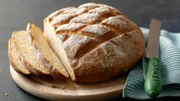

White Bread

A good, old-fashioned, English, white, crusty loaf, soft inside and lightly textured, is still hard to
beat - it's my favourite for soldiers to go with softly boiled eggs, and the next day or the day after it always makes divine toast.
It couldn't be easier, and the pleasure of eating it is difficult to match.
ingredients
- 550g strong white flour (at room temperature) plus a little for dusting
- 1 level dessertspoon fine salt
- ¾ teaspoon easy bake yeast
- 350ml hand-hot water
Steps
- Measure the flour, salt and yeast into a bowl, using a spatula mix everything together thoroughly.
- Make a well in the centre of the mixture then add the water. Now mix to a dough, starting off with the spatula and using your hands in the final stages of mixing,
adding a spot more water if there are any dry bits. Continue to mix and press the dough in the bowl for about 1 minute so that the dough
is evenly mixed (it will feel little sticky but that’s fine) then put the bowl of dough into a large polythene bag and close it with a clip.
- Leave it until it looks as though it has doubled in bulk, which will be about 2 hours at room temperature. After that, punch out all the air,
then knead lightly and shape the dough into an oblong, then roll it up and place it into the buttered tin, sprinkle with a dusting of flour.
Now place it in a greased polythene bag, closed with a clip until the dough rises above the top of the tin – this time about an hour at room temperature.
- Meanwhile, pre-heat the oven to 230°C, gas mark 8.
- Once the dough has risen, remove the bag, slash the top of the loaf with a sharp serrated knife and bake it on the centre shelf for 25 minutes.
Then reduce the temperature to 200C, gas mark 6 for a further 15 minutes. Turn it out on to a cloth to protect your hands.
Then tap the bottom of the loaf with your fingertips to check if it is cooked through as you tap you should hear a hollow sound.
- If you like it crusty then return the bread, out of its tin, upside-down to the oven to crisp the base and side crust for about 5 minutes, then cool on a wire rack.